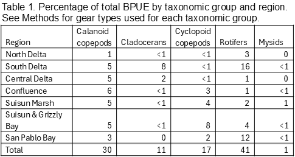

Zooplankton Report
Introduction
This report presents zooplankton annual and monthly abundances and distribution trends from water years 1974 through 2024 for the most common copepods (calanoid and cyclopoid), cladocerans, rotifers, and mysids of the upper estuary.
Methods
Zooplankton have been sampled in the upper SFE since 1972, once or twice per month from March to November through 1994, and monthly from 1995 to the present. Sampling was modified due to the COVID-19 pandemic, with no surveys in April and May 2020, a reduced survey (five stations) in December 2020, and no surveys in January and February 2021. Samples were collected at stations from San Pablo Bay through the Delta (Figure 1), including up to four non-fixed stations representing the low salinity zone (LSZ), defined as bottom specific conductance of 2 and 6 millisiemens per centimeter (approximately 1 and 3 psu). As of June 2024, sampling was suspended at stations 2 and 4 (Carquinez Strait), 325 (San Pablo Bay), and low-salinity zone stations in the San Joaquin River, but this sampling may be reinstated in the future.
Zooplankton were sampled using three gear types that target different size classes: 1) pump samples (collected with a 1/10 hp, 12V utility pump) filtered through a 43-micron mesh net for micro-zooplankton (rotifers, copepod nauplii, and small cyclopoid copepods); 2) Clarke-Bumpus (CB) net with 160-micron mesh to sample meso-zooplankton (cladocerans and most juvenile and adult calanoid copepods); 3) mysid net with 505-micron mesh targeting mysid shrimp and other macro-zooplankton. The mysid and CB nets were mounted on the same tow sled and samples were collected in 10-minute stepped oblique tows over the depth range of each station.
Catch per unit effort (CPUE) was calculated using the volume of water filtered during a net tow. Volume filtered during mysid and CB tows was determined using a General Oceanics flowmeter mounted in the mouth of each net and calculated as:
\[V=(endmeter−startmeter)k∗a\]
where V is the volume of water sampled (mL), k is the flow meter constant, and a is the area of the mouth of the net (m2).
The pump samples 19.8 gallons over the upper 30’ of the water column, filtered through a 43-micron mesh net. All zooplankton samples are preserved immediately after collection in 10% formalin with rose bengal dye. Target organisms in each sample are identified and counted in the laboratory using dissecting microscopes. More information about the sampling and processing methods can be found in the metadata here.
Abundance indices are calculated for each organism from its target gear type (noted above). Abundance is reported as mean CPUE, calculated as the number of each organism collected per cubic meter of water sampled:
\[CPUE=s∗V^{−1}\]
where s is the estimated count of the target organism in the sample.
Calanoid and cyclopoid copepod abundance indices reported here comprise adults only, as juveniles cannot always be identified to species. Annual and monthly abundance indices were calculated using 16 fixed stations sampled consistently since 1974 (Figure 1) and two to four non-fixed LSZ stations (described above). Note that the number of LSZ stations per survey varied as only one sample was collected if the LSZ location was the same as a fixed station.
To analyze long-term trends (1974 to present), annual abundance indices were calculated as the mean CPUE for samples collected from March through November, as winter sampling was inconsistent before 1995. Monthly abundances span the period from October 2023 through December 2024 to encompass both water year and calendar year and are also shown by region, as detailed in each section below. Estuary regions are designated as San Pablo Bay (stations D41, D41A, 325), Suisun and Grizzly Bay (stations 2, 4, D6, 28, 48), Suisun Marsh (stations 32, S42), Confluence (stations 54, 60, 64, 74), Central Delta (stations D16, 86, D28, M10), North Delta (68), and South Delta (92) (Figure 1). Non-fixed LSZ stations were assigned to a geographic region based on their location, which was most often in the Confluence in 2024 (18 of 21), or Suisun and Grizzly Bay (April, May, June). Sampling of LSZ stations in the San Joaquin River was suspended as of June 2024, but an LSZ station was only found in this region in January. Annual indices include data from the 16 core stations and the two LSZ stations not in the San Joaquin River. Monthly CPUE by region for 2024 includes data from all LSZ stations (fixed and non-fixed).
Biomass of copepods, cladocerans, and rotifers was determined following standard methods (Bashevkin et al. 2022 and references therein) using literature values of carbon per individual (Dumont et al. 1975, Salonen, K., Latja, R. 1988, Uye et al. 1983, Culver et al. 1985, Sabatini and Kiørboe 1994, Uye and Sano 1995, Walz 1995, Kimoto et al. 1986, Logerwell and Ohman 1999, Hooff & Bollens 2004). For mysids, dry weight was calculated based on length and converted to carbon using a standard conversion of 40% (Wiebe et al. 1975, Kiørboe 2013). Biomass is reported as biomass per unit effort (BPUE, calculated using volume filtered as for CPUE) by region for the most abundant species in the estuary.
2024 Conditions
Freshwater outflow was high only in February and March 2024, in contrast with extended high outflow in 2023 from atmospheric river storms (Figure 2). In 2023 high outflow transported small zooplankton downstream from upper estuary regions, but less intense and shorter duration outflow in 2024 suggests that low numbers of small zooplankton in upper estuary regions during these months are likely related to seasonal patterns of productivity rather than outflow.
Trends
The overall abundance of zooplankton in the estuary has decreased significantly over the course of the Zooplankton Study (Figure 3). Cyclopoid copepods as a whole were the only group that increased in abundance over the study period, but this was driven by the introduction and proliferation of the invasive Limnoithona tetraspina in the mid-1990s. The overall decrease in zooplankton abundance can be attributed to invasive species colonizing the estuary, most notably the Asian clam Potamocorbula amurensis in the mid-1980s (Kimmerer et al. 1994; Carlton et al. 1990). Abundances of both phytoplankton and zooplankton in the upper estuary have been impacted by the proliferation of P. amurensis, as it is a highly efficient filter feeder and consumes phytoplankton and small zooplankton, including copepod nauplii. In addition to decreased abundance of most zooplankton groups, community compositions have changed dramatically during the study period (Figure 3), driven by a combination of the introduction and spread of non-native species and changes in the abiotic and biotic environments.
Calanoid copepods
Aside from a 25-year high in calanoid copepod abundance in 2017, total abundance was similar from 1995 to 2024 (Figure 3). Total abundance of calanoid copepods in 2024 declined slightly compared to 2023 but remained within the range of the past six years (2018-2023) (Figure 3). Proportions of Pseudodiaptomus forbesi and Acartiella sinensis also remained similar during this period (Figure 3). Adult calanoid copepod abundance declined only slightly over the study period, but their community composition changed dramatically (Figure 3). When the study began in the early 1970s, the calanoid copepod community was dominated by Acartia spp. and an introduced species in the genus Eurytemora (initially identified as E. affinis (Esterly 1924), now considered E. carolleeae (Alekseev and Soussi 2011), referenced in this report as Eurytemora spp.). Even though Eurytemora spp. is not native, it was once the primary prey of the endangered Delta Smelt. However, as its abundance declined, fish increasingly preyed on more recently introduced calanoids like P. forbesi (Moyle et al. 1992; Slater and Baxter 2014).
One of the first recorded calanoid copepod introductions was Sinocalanus doerrii, a freshwater species native to China that invaded the estuary in 1978 and remained the most dominant calanoid species for a decade (Orsi et al. 1983). The calanoid P. forbesi was first detected by the present study in October 1987 (Orsi and Walter 1991), shortly after the Potamocorbula amurensis invasion in the mid-1980s (Carlton et al. 1990, Kimmerer et al. 1994). Combined effects of these introductions may have influenced subsequent abundance declines of E. affinis and S. doerrii. P. forbesi quickly became the numerically dominant calanoid in the upper estuary and remains the most abundant to this day. The predatory calanoid copepod Acartiella sinensis was introduced in 1993 and soon became the second most abundant calanoid in the upper estuary, dominating the low-salinity zone in the Suisun Marsh and Confluence regions (Orsi and Ohtsuka 1999). This invasion appears to have narrowed the range of P. forbesi towards freshwater areas of the estuary, potentially in relation to predation by A. sinensis on P. forbesi nauplii (Kayfetz and Kimmerer 2017).
Calanoid abundances, including Eurytemora spp., were very low from January through March in upstream regions (South, Central, and North Delta, and Confluence) (Figure 4), in contrast with seasonal distribution patterns from drought years (2020 through 2022) that showed Eurytemora spp. as the most common calanoid in these regions in spring (see link in Reference section to previous zooplankton annual reports).
Similar to recent years, Pseudodiaptomus forbesi was dominant in the South, Central, and North Delta, and Confluence but abundances in 2024 remained low until May or June (Figure 4) whereas in prior years abundances increased starting in March (see link in Reference section to previous zooplankton annual reports). P. forbesi inhabits low salinity waters so this species is typically rare in downstream regions but was fairly abundant in May and June in Suisun Marsh and Suisun and Grizzly Bay (Figure 4). Unlike 2023, this species was not found in San Pablo Bay (Shaw and Hieb 2024). P. forbesi was abundant in the North Delta in December 2023 and July 2024 but calanoids were low in all other months in this region. In the Confluence region, P. forbesi abundance increased substantially between April and May and was high in June but decreased in subsequent months (Figure 4).
The predatory Acartiella sinensis was the dominant species in the Confluence, Suisun Marsh, and Suisun and Grizzly Bay regions in July and August but from September through November numbers of A. sinensis and P. forbesi were similar in these regions (Figure 4). Abundance of A. sinensis in the Confluence region was similar July through November, but high in Suisun Marsh only in August. In Suisun and Grizzly Bay P. forbesi was fairly abundant in May and June but A. sinensis dominated the region from July through October. In these three regions, A. sinensis co-occurred with high densities of one of its primary prey items, Limnoithona tetraspina (Figure 5). P. forbesi abundance was high in Suisun Marsh from March through July in 2024, in contrast with low abundances in this region during the drought years from 2020 through 2022 (see link in Reference section to previous zooplankton annual reports).
Acartia spp. were the only native calanoids commonly found in 2024, and they were present only in the lower estuary. These copepods prefer brackish water and were the most abundant copepods in San Pablo Bay from March through December, though monthly abundances varied (Figure 4). In Suisun and Grizzly Bay, Acartia spp. were present during most months but abundant only in December 2024. Eurytemora spp. were abundant in this region from February through June in 2023, while in 2024 they were only moderately abundant in April and May. In 2024 Tortanus spp. were present in this region throughout the year (Figure 4) while in 2023 they were essentially absent from this region until June (Shaw and Hieb 2024). In San Pablo Bay, Tortanus spp. abundances were low, aside from moderate abundance in February (Figure 4).
Cyclopoid copepods
In contrast with the general decline of major zooplankton groups during the study period, adult cyclopoid copepods increased dramatically, particularly from 2012 to 2022 (Figure 3). In 2023 cyclopoid copepod abundance declined to about half the average for the previous decade (Figure 3), likely because these small organisms were transported downstream by high freshwater outflow, but cyclopoid abundance in 2024 was similar to 2022 (Figure 3).
Abundances of Oithona spp. and Acanthocyclops copepods were very low when the study began (Figure 3), and the increase in cyclopoid abundance resulted from the introduction of Limnoithona sinensis in the early 1980s and subsequent identification of the invasive Limnoithona tetraspina in 1993 (Ferrari and Orsi 1984; Orsi and Ohtsuka 1999). These two species were reported together as Limnoithona spp. from 1980 through 2006. Limnoithona were identified to species starting in 2007, leading to the discovery that L. tetraspina is by far the dominant species. For the sake of consistency, abundances were combined and reported here as Limnoithona spp. In 2024, Limnoithona spp. was by far the most abundant copepod group collected by this study (Figure 3).
The increase in L. tetraspina abundance may be related to decreased predation due to the decline of Northern Anchovy in the upper SFE (Kimmerer 2006). In addition, the small size, high growth rate, and motionless behavior of L. tetraspina may decrease its vulnerability to predation in a region where most fish are visual predators (Bouley and Kimmerer 2006, Kimmerer 2006). The introduction of L. tetraspina is linked to P. forbesi distribution shifting upstream of the low-salinity zone of the estuary, as higher densities of L. tetraspina may sustain larger populations of the predatory A. sinensis, which also preys on P. forbesi nauplii (Kayfetz and Kimmerer 2017).
Limnoithona spp. were the most abundant cyclopoids in 2024, but their abundances were generally low from January through May in all regions of the estuary and remained low in the South, Central, and North Delta in comparison with other regions (Figure 5). Limnoithona spp. abundances increased in the Confluence, Suisun Marsh, and Suisun and Grizzly Bay regions starting in June or July and remained high through November (Figure 5). In previous years Limnoithona spp. have been virtually absent from San Pablo Bay, but were moderately abundant here in March and May 2024, then declined with increasing salinities, concurrent with increased abundance of the introduced Oithona davisae, typically the most abundant cyclopoid in this region (Figure 5).
Cladocerans
Cladocerans in the upper estuary primarily comprised species in the genera Bosmina, Ceriodaphnia, Daphnia, and Diaphanosoma. Their populations have declined substantially during the study period (Figure 3). Although there has been somewhat of an increasing trend since the late 1990s, abundances in 2023 and 2024 were among the lowest since 2013 (Figure 3). Cladocerans are largely herbivorous and feed primarily on phytoplankton, so they likely were impacted by the invasion of P. amurensis (Baxter et al. 2008; Greene et al. 2011, Kratina and Winder 2015). Throughout the upper estuary, cladocerans comprise a significant portion of Delta Smelt and juvenile Chinook Salmon diets (Slater and Baxter 2014; Goertler et al. 2018) and were historically an important food source for young-of-the-year Striped Bass (Heubach et al. 1963). Increased abundances of invasive copepods such as P. forbesi and the declines in native cladocerans may alter the nutritional content of the planktonic prey available to fish (Kratina and Winder 2015).
In the early years of the study, the cladoceran community was dominated by Bosmina longirostris and Daphnia spp. (Figure 3). Over the last decade, the cladoceran community shifted to higher proportions of Ceriodaphnia spp. and Diaphanosoma spp., although B. longirostris and Daphnia spp. were still present (Figure 3). Cladoceran abundance in 2024 was only slightly higher than 2023, with Diaphanosoma spp. the most abundant taxon, followed by similar abundances of B. longirostris and Ceriodaphnia (Figure 3).
Cladoceran abundances overall were lower in most regions in 2024 compared to 2023 (Shaw and Hieb 2024) in all regions except the South and Central Delta (Figure 6). Note the difference in scale between these two regions and the rest of the study area (e.g. South Delta CPUE in October 2024 is higher than maximum CPUE in all regions except Central Delta). In the South and Central Delta, low abundances of cladocerans in the early months of the year comprised B. longirostris, Ceriodaphnia spp., Daphnia spp. and the “other” category. Abundances were high from June through September with Diaphanosoma spp. the most abundant taxon in these regions, along with Ceriodaphnia spp. in the Central Delta in July and August, and B. longirostris in July in both regions (Figure 6).
In the North Delta, abundances were highest in February and March, low July through November, and high in December (2024), with similar species composition (B. longirostris, Ceriodaphnia spp., Daphnia spp., and “other”) during periods of high abundance. In the Confluence region abundances increased starting in January and remained elevated through July, although the species composition changed from B. longirostris, Ceriodaphnia, Daphnia, and “other” from January through April, to higher numbers of Ceriodaphnia in May and a dramatic increase in Diaphanosoma in June (Figure 6). Abundances were much lower from July to September, but Diaphanosoma remained the dominant taxon (Figure 6). In Suisun and Grizzly Bay and Suisun Marsh, cladocerans, largely B. longirostris and “other”, were present in winter and spring months but all taxa were essentially absent after June. The cladoceran community in San Pablo Bay comprised only the “other” category, with the highest CPUE in December (Figure 6).
Rotifers
Although rotifers are the most abundant type of zooplankton in the upper estuary, their abundance decreased dramatically since the start of the study (Figure 3). Interestingly, the decline in rotifer abundance began in the late 1970s, preceding the invasion by P. amurensis (Cloern and Jassby 2012). The rotifer community comprised species from the genera Polyarthra, Synchaeta, Keratella, and Trichocerca, as well as the “other” rotifer category, which includes the genus Asplanchna. Rotifer abundance increased in 2023 after several very low years but decreased again in 2024 when Synchaeta spp. abundance declined to about half that of 2023 (CPUE 5,864 and 11,502, respectively) (Figure 3). In 2024, “other” rotifers were most abundant, followed by Synchaeta spp. Synchaeta bicornis, Polyarthra spp. and Keratella spp. (Figure 3).
Keratella and Polyarthra tended to be most abundant in freshwater and low-salinity regions (Figure 7), their preferred habitats (Winder and Jassby 2011). Increased abundances of these taxa in Suisun Marsh and Suisun and Grizzly Bay in the winter and spring of 2024 suggest fresher than usual conditions, though Synchaeta spp. co-occurred with them in all regions including San Pablo Bay. A spatial and temporal split was discernible between Synchaeta and the other rotifer groups, with Synchaeta spp. the dominant group in the North Delta, Confluence, Suisun Marsh, Suisun and Grizzly Bay, and San Pablo Bay during winter and spring months but largely absent after April except in San Pablo Bay. In Suisun and Grizzly Bay there was a noticeable increase in S. bicornis abundance from August through October, though Synchaeta spp. were also present. The “other” rotifers group was most abundant in the Central Delta during summer. In the South Delta, Polyarthra spp., and “other” were most abundant in spring and summer, with a dramatic increase in abundance of Synchaeta spp. in November 2024 (Figure 7).
Mysids
Mysid abundances were higher overall during the first 12 years of the Zooplankton Study, with the highest abundance in 1986 (Figure 3). From 1987 to the present, annual abundances have varied from 2.1 to 29.4 (mean 12.3), with the 2024 annual CPUE of 16.6 slightly higher than 2023 (13.1) (Figure 3) and higher than the mean over this period. In addition to an overall decline since the inception of the study, the mysid community composition shifted dramatically. Prior to 1994, the native Neomysis mercedis was the most abundant species but since 1994 the mysid community has been dominated by the introduced Hyperacanthomysis longirostris (formerly Acanthomysis bowmani) (Figure 3). N. mercedis declined significantly during the 1976-1977 drought, likely related to food limitation from a lack of diatoms due to low river discharges (Siegfried et al. 1979; Cloern et al. 1983). N. mercedis populations rebounded after the drought and abundances remained high in the Suisun Bay region until the introduction of P. amurensis in the mid-1980s, after which their numbers declined dramatically and remained low (Orsi 1999). The mysid community in 2024 was dominated by H. longirostris, along with a small proportion of Neomysis kadiakensis. H. longirostris remained the most common mysid in the upper estuary, while the abundance of the once dominant native species N. mercedis remained extremely low, continuing the overall trend in mysid community composition since 1994.
The introduced mysid H. longirostris was first detected by the present study in 1993, shortly after the decline of N. mercedis. Although H. longirostris quickly became the most common mysid in the system, total mysid abundances have not returned to their pre-clam (Potamocorbula amurensis) invasion levels (Modlin and Orsi 1997, Figure 3). Historically mysids have been critically important in the diets of many fish species in the upper SFE, including Delta Smelt, Longfin Smelt, Striped Bass, and Chinook Salmon (Moyle et al. 1992; Feyrer et al. 2003; CDFG 2009; Goertler et al. 2018). The decline of mysids in the upper estuary led to a significant decrease in their presence in fish diets (Feyrer et al. 2003).
In 2024 H. longirostris, the dominant mysid species, was most common in the Confluence, Suisun Marsh, and Suisun and Grizzly Bay regions from June through September, with an unusually high abundance in the South Delta in August (Figure 8). Neomysis kadiakensis, the second most abundant mysid species, followed a similar seasonal pattern to that of H. longirostris, although N. kadiakensis was also moderately abundant in San Pablo Bay in summer (Figure 8). Although abundances of the native N. mercedis remain very low, this species was found in the South Delta, Central Delta, Suisun Marsh, and San Pablo Bay in 2024.
From January through April, mysids were essentially absent from all regions except Suisun and Grizzly Bay and San Pablo Bay. The mysid community in San Pablo Bay typically comprised the “other” species (Acanthomysis aspera, Acanthomysis hwanhaiensis, and Alienacanthomysis macropsis). This group was present during most months but most abundant in summer (June to August), along with smaller numbers of N. kadiakensis and H. longirostris (Figure 8). Note that the present study samples only the upper portion of San Pablo Bay, so these findings do not represent mysid community dynamics in other areas of San Pablo Bay.
Zooplankton biomass
Biomass (biomass per unit effort, BPUE, micrograms of carbon per cubic meter) was calculated for copepods, cladocerans, rotifers, and mysids (Tables 1, 2, 3, 4). Overall, rotifers (41%) and calanoid copepods (30%) comprise the majority of zooplankton biomass, followed by cyclopoid copepods (17%), cladocerans (11%), and mysids (1%) (Table 1). P. forbesi and Eurytemora were significant in all regions except San Pablo Bay, along with Acartiella in the Confluence and lower estuary (Suisun Marsh, Suisun and Grizzly Bay), and Tortanus in Suisun and Grizzly Bay and San Pablo Bay (Table 2). BPUE of cladocerans, largely Diaphanosoma, was high in the South and Central Delta regions (Tables 1, 2). The extremely abundant cyclopoid copepod Limnoithona sp., found in the tens of thousands in Suisun Marsh and Suisun and Grizzly Bay (Figure 5), only accounts for a maximum of 8% of total BPUE in these regions (Table 1). The cyclopoid O. davisae and the calanoids Acartia spp. and Tortanus spp. account for the highest percentage of carbon in San Pablo Bay (Tables 2, 3). Carbon from mysids only accounted for 1% of total carbon (Table 1), with higher BPUE in summer months in Suisun Marsh and Suisun and Grizzly Bay but generally low otherwise (Table 4).

Conclusion
In 2024, the Zooplankton Study recorded copepods, cladocerans, rotifers, and mysids at abundances consistent with historic downward trends in the upper estuary. Abundances of all zooplankton groups peaked in summer of 2024, and rotifer abundances were also high from February to April. Freshwater outflow in early 2024 was less intense and of shorter duration than in 2023, suggesting that low numbers of small zooplankton in upper estuary regions from January through March are likely related to seasonal patterns of productivity rather than outflow. The small, introduced cyclopoid Limnoithona tetraspina remained the most abundant copepod in upper estuary regions (North, South, and Central Delta), though its BPUE in these regions was low compared to calanoids, cladocerans, and rotifers. Mysid abundance remained low compared to historic levels but increased slightly in 2024 compared to 2023. The mysid community remained dominated by the introduced Hyperacanthomysis longirostris, in comparison to the pre-1987 community, which was dominated by the native Neomysis mercedis.
The long-term Zooplankton Study allows researchers and managers to track shifts in zooplankton abundances and community composition in the upper estuary for more than five decades. The Zooplankton Study has documented the introduction and dominance of Pseudodiaptomus forbesi, Limnoithona tetraspina, and Hyperacanthomysis longirostris, as well as the community’s response to the invasive clam Potamocorbula amurensis. Understanding these dynamics and how they have fundamentally changed trophic interactions is critical to assessing conservation strategies and food resources for fish in the upper San Francisco Estuary.
References
Alekseev, VR, Souissi, A.2011. A new species within the Eurytemora affinis complex (Copepoda: Calanoida) from the Atlantic Coast of USA, with observations on eight morphologically different European populations, Zootaxa 2767: 41-56
Bashevkin SM, Hartman R, Thomas M, Barros A, Burdi CE, Hennessy A, Tempel T, Kayfetz K. 2022. Five decades (1972–2020) of zooplankton monitoring in the upper San Francisco Estuary. https://doi.org/10.1371/journal.pone.0265402
Baxter R, Feyrer F, Nobriga M, Sommer T. 2008. Pelagic Organism Decline Progress Report: 2007 Synthesis of Results. (filelib.wildlife.ca.gov).
Bouley P, Kimmerer WJ. 2006. Ecology of a highly abundant, introduced cyclopoid copepod in a temperate estuary. Mar Ecol Prog Ser. 324:219–228.
Carlton JT, Thompson JK, Schemel LE, Nichols FH. 1990. Remarkable invasion of San Francisco Bay (California, USA) by the Asian clam Potamocorbula amurensis. I. Introduction and dispersal. Mar Ecol Prog Ser. 66:81–94.
CDFG. 2009. A Status Review of the Longfin Smelt (Spirinchus thaleichthys) in California. Sacramento.
Cloern JE, Alpine AE, Cole BE, Wong RLJ, Arthur JF, Ball MD. 1983. River discharge controls phytoplankton dynamics in the northern San Francisco Bay estuary. Estuar Coast Shelf Sci. 16(4):415–429.
Cloern JE, Jassby AD. 2012. Drivers of change in estuarine-coastal ecosystems: Discoveries from four decades of study in San Francisco Bay. Rev Geophys. 50:4001.
Culver, D, Boucherle, MM, Bean, DJ, Fletcher, JW. 1985. Biomass of Freshwater Crustacean Zooplankton from Length–Weight Regressions. Can. J. Fish. Aquat. Sci. 42(8):https://doi.org/10.1139/f85-173
Dumont, HJ, Van de Velde, I, Dumont, S. 1975. The dry weight estimate of biomass in a selection of Cladocera, Copepoda and Rotifera from the plankton, periphyton and benthos of continental waters. Oecologia 19:75–97. https://doi.org/10.1007/BF00377592
Esterly, CO. 1924. The free-swimming Copepoda of San Francisco Bay, University of California Publications in Zoology, Berkeley 26(5): 81-129.
Ferrari FD, Orsi J. 1984. Oithona davisae, new species, and Limnoithona sinensis (Burckhardt, 1912) (Copepoda: Oithonidae) from the Sacramento-San Joaquin Estuary, California. J Crustac Biol. 4(1):106–126.
Feyrer F, Herbold B, Matern SA, Moyle PB. 2003. Dietary shifts in a stressed fish assemblage: Consequences of a bivalve invasion in the San Francisco Estuary.
Goertler P, Jones K, Cordell J, Schreier B, Sommer T. 2018. Effects of extreme hydrologic regimes on juvenile Chinook Salmon prey resources and diet composition in a large river floodplain. Trans Am Fish Soc. 147:287–299.
Greene VE, Sullivan LJ, Thompson JK, Kimmerer WJ. 2011. Grazing impact of the invasive clam Corbula amurensis on the microplankton assemblage of the northern San Francisco estuary. Mar Ecol Prog Ser. 431:183–193.
Hartman, R, Burdi, CE, Rasmussen, NL. et al. 2025. Hidden Complexities in the Base of the Pelagic Food Web: Correlates Between Zooplankton and Chlorophyll Vary by Functional Feeding Group. Estuaries and Coasts 48:129. https://doi.org/10.1007/s12237-025-01567-4
Heubach W, Toth RJ, Mccready AM. 1963. Food of Young-of-the-year Striped Bass (Roccus Saxatilis) in the Sacramento-San Joaquin River. Calif Fish Game. 49(4):224–239.
Hobbs JA, Bennett WA, Burton JE. 2006. Assessing nursery habitat quality for native smelts (Osmeridae) in the low-salinity zone of the San Francisco estuary. J Fish Biol. 69(3):907–922.
Hooff, RC, Bollens, SM. 2004. Functional response and potential predatory impact of Tortanus dextrilobatus, a carnivorous copepod recently introduced to the San Francisco Estuary. Mar. Ecol. Prog. Ser. 277: 167-179. https://doi.org/10.3354/meps277167.
Kayfetz K, Kimmerer W. 2017. Abiotic and biotic controls on the copepod Pseudodiaptomus forbesi in the upper San Francisco Estuary. Mar Ecol Prog Ser. 581:85–101.
Kiørboe T. 2013. Zooplankton body composition. Limnol. Oceanog. 58(5):1843-1850.
Kimmerer W, Ignoffo TR, Bemowski B, Modéran J, Holmes A, Bergamaschi B. 2018. Zooplankton dynamics in the Cache Slough Complex of the upper San Francisco estuary. San Fr Estuary Watershed Sci. 16(3).
Kimmerer WJ. 2006. Response of anchovies dampens effects of the invasive bivalve Corbula amurensis on the San Francisco Estuary foodweb. Mar Ecol Prog Ser. 324:207–218.
Kimmerer WJ, Gartside E, Orsi JJ. 1994. Predation by an introduced clam as the likely cause of substantial declines in zooplankton of San Francisco Bay. Mar Ecol Prog Ser. 113(1–2):81–94.
Kimoto, K, Uye, S., Onbé, T. 1986. Egg production of a brackish water calanoid copepod copepod Sinocalanus tenellus in relation to food abundance and temperature. Bull. Plankt. Soc. Japan. 33(2):133-145.
Kratina P, Winder M. 2015. Biotic invasions can alter nutritional composition of zooplankton communities. Oikos. 124:1337–1345.
Logerwell, EA, Ohman, MD. 1999. Egg-brooding, body size and predation risk in planktonic marine copepods. Oecologia 121:426–431.
Modlin RF, Orsi JJ. 1997. Acanthomysis bowmani, a new species, and A. aspera Ii, Mysidacea newly reported from the Sacramento-San Joaquin Estuary, California (Crustacea: Mysidae). Proc Biol Soc Washingt. 110(3):439–446.
Moyle PB, Herbold B, Stevens DE, Miller LW. 1992. Life history and status of Delta Smelt in the Sacramento-San Joaquin estuary, California. Trans Am Fish Soc. 121(1):67–77.
Orsi J, Walter TC. 1991. Pseudodiaptomus forbesi and P. marinus (Copepoda: Calanoida), the latest copepod immigrants to California’s Sacramento-San Joaquin Estuary. Bull Plankt Soc Japan.:553–562.
Orsi JJ, Bowman TE, Marelli DC, Hutchinson A. 1983. Recent introduction of the planktonic calanoid copepod Sinocalanus doerrii (Centropagidae) from mainland China to the Sacramento-San Joaquin Estuary of California. J Plankton Res. 5(3):357–375.
Orsi JJ. 1999. Long-term trends in mysid shrimp and zooplankton. Interagency Ecological Program for the San Francisco Estuary. IEP Newsletter 12(2):13–5.
Orsi JJ, Ohtsuka S. 1999. Introduction of the Asian copepods Acartiella sinensis, Tortanus dextrilobatus (Copepoda: Calanoida), and Limnoithona tetraspina (Copepoda: Cyclopoida) to the San Francisco Estuary, California, USA. Plankt Biol Ecol. 46(2):128–131.
Sabatini, M. and Kiørboe, T. 1994. Egg production, growth and development of the cyclopoid copepod Oithona similis, J. Plankt. Res.16(10):1329–1351. https://doi.org/10.1093/plankt/16.10.1329
Salonen, K., Latja, R. 1988. Variation in the carbon content of two Asplanchna species. Hydrobiologia 162:79–87. https://doi.org/10.1007/BF00014335
Schroeter RE, O’Rear TA, Young MJ, Moyle PB. 2015. The aquatic trophic ecology of Suisun Marsh, San Francisco Estuary, California, during autumn in a wet year. San Fr Estuary Watershed Sci. 13(3).
Shaw, CT, Hieb KA. 2024. Zooplankton Status and Trends Report 2023. Environmental Monitoring Program - Zooplankton Report
Siegfried CA, Kopache ME, Knight AW. 1979. The Distribution and Abundance of Neomysis mercedis in Relation to the Entrapment Zone in the Western Sacramento-San Joaquin Delta. Trans Am Fish Soc. 108(3):262–270.
Slater SB, Baxter R. 2014. Diet, Prey Selection, and Body Condition of Age-0 Delta Smelt, Hypomesus transpacificus, in the Upper San Francisco Estuary. San Fr Estuary Watershed Sci. 12(3):1–24.
Sommer T, Armor C, Baxter R, Breuer R, Brown L, Chotkowski M, Culberson S, Feyrer F, Gingras M, Herbold B, et al. 2007. The collapse of pelagic fishes in the upper San Francisco Estuary. Fisheries. 32(6):270–277.
Uye, S., Iwai, Y. Kasahara, S. 1983. Growth and production of the inshore marine copepod Pseudodiaptomus marinus in the central part of the Inland Sea of Japan. Mar. Biol. 73:91–98. https://doi.org/10.1007/BF00396289
Uye, S, Sano, K. 1995. Seasonal reproductive biology of the small cyclopoid copepod Oithona davisae in a temperate eutrophic inlet. Mar Ecol Prog Ser 118:121-128. https://doi.org/10.3354/meps118121.
Walz, N. 1995. Rotifer populations in plankton communities: Energetics and life history strategies. Experientia 51:437–453. https://doi.org/10.1007/BF02143197
Wiebe PH, Boyd S, Cox JL, 1975. Relationships between zooplankton displacement volume, wet weight, dry weight, and carbon. Fish. Bull. 73(4):777-786.
Winder M, Jassby AD. 2011. Shifts in Zooplankton Community Structure: Implications for Food Web Processes in the Upper San Francisco Estuary. Estuaries and Coasts. 34:675–690.
Zooplankton annual reports 2013-2022. Shaw et al., Barros et al., Hennessey et al.
emp-website/admin/archive/zoop at gh-pages · emp-dwr/emp-website · GitHub